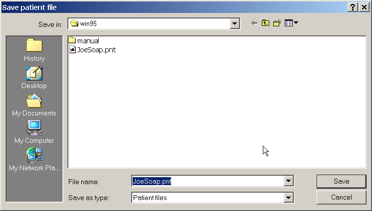

There are also two ways of saving a treatment plan. Either click on the ‘Save patient’ speed button containing the floppy disk icon, or select the ‘File’, ‘Save’ option on the menu bar. This will open the ‘Save patient’ dialogue box, see Error: Reference source not found, that contains a list of previously saved files as well as an edit box where you can enter in your file name. You may enter a file name as long as you like, but it must not contain any extensions as the program adds its own unique extension. Enter a file name and then either click on the ‘OK’ button, or press <Enter>. This will close the dialogue box and save the file. Please note that the ‘Save patient’ dialogue will also appear if you try and open another patient, if you try to create a new patient, or if you try to exit the Opposing Fields program when the data of the current patient has been modified and has not been saved. This is to ensure that you do not lose your data. If you do not wish to save the plan, simply click on the ‘Cancel’ button, or press <Esc>.
Figure 7: The ‘Save patient’ dialogue box.